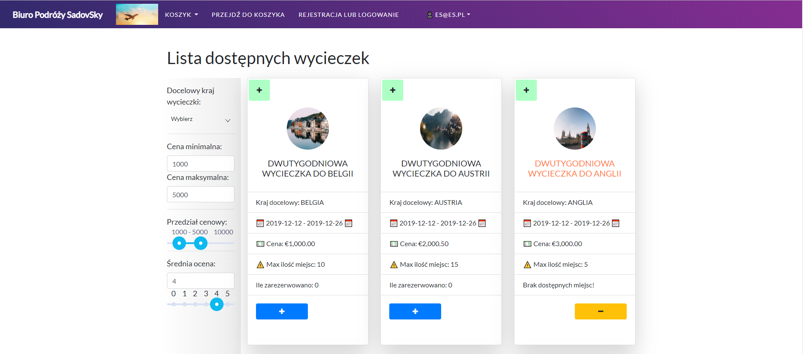
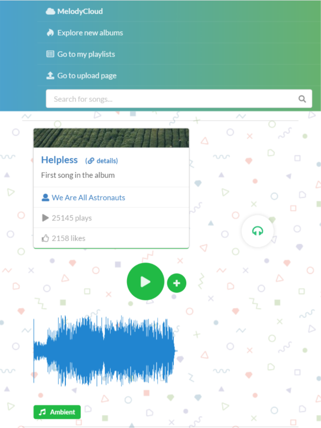

Skills
- Java 8 — with the use of Spring Framework
- SQL and relational databases — especially PostgreSQL and Oracle
- Cloud computing — especially using Amazon Web Services platform
- Linux
- Git
- Maven
- JavaScript ES6 — with the use of React framework
- Python 3 — with the use of Flask, scikit-learn and panda libraries
- HTML5 & CSS3
- Jenkins
- GraphQL language and Apollo library
- Docker
- ElasticSearch
- Node.js — with the use of Express framework
- SASS
- No-SQL technologies — such as HBase, Mongo, DynamoDB — and also Neo4J graph database
- Agile Development & Scrum
- Mobile-First, Responsive Design
- Unit testing
Experience
Associate/Contributor Software Engineering
I worked in a variety of projects in Sabre. I worked mainly in a role of a full-stack web developer using technologies such as:
- Java 8 (with Spring framework)
- React.js
- Jenkins
- Oracle and Vertica database
- Swagger
- Node.js
I worked mostly on applications in microservices architecture.
A large part of projects, which I took part in, were created natively in cloud (Amazon Web Services) and also I worked on migrating already existing applications to the cloud, which gave me a big opportunity to learn in this area.
Additionally, I worked in Tableau Business Intelligence Tool.
I also took part in a project in area of Machine Learning, which was about creating forecasting application using regression methods. During this project I worked with technologies such as: python3, pandas, sklearn, also doing analysis in Jupyter notebooks
Jan 2018 – May 2019
(Contributor position)
May 2019 - Present
Working Student/Web Development Intern
I worked on creating a couple of small web applications using Python3 + Flask as well as HTML5, CSS3 and Javascript. What is more, I worked on those projects in Test Driven Development methodology. I learned to use Continous Integration as well - in team, that I was part of, we used Gitlab CI in our workflow.
Aug 2017 – Sep 2017
(Working student)
Oct 2017 – Nov 2017
Intern
I was a part of a back-end team whose task was to work with Big Data (obtaining from APIs, processing and analyzing the data). I worked with technologies such as Python3, Flask, Docker and Elasticsearch. The methodology applied to create projects was Scrum.
Education
AGH University of Science and Technology
AGH University of Science and Technology
Grade: 4.5/5
I High School in Limanowa
Results from high school leaving exam ("matura"):
Oral english exam: 100%
Basic level english language exam: 98%
Basic level mathematics exam: 98%
Advanced level mathematics exam: 98%
Advanced level english language exam: 98%
Projects
-
"SadovSky" - application for booking airplane tickets
Demo url: Demo
Link to the code: SadovSky code
Screenshot:
 Click to Enlarge -
"Melody Cloud" - project implemented as part of my Engineer's Thesis (graded at 5.0)
Project implemented natively in Amazon Web Services cloud using AWS Lambdas, S3, CloudFront and API Gateway
User interface was implemented in React.js with the use of Semantic UILink to the code: Melody Cloud
Thesis text (written in polish language): Szymon Sadowski - praca inżynierska
Screenshot:
 -
Anomaly detection in PostgreSQL
Description: I managed to create performant anomaly detection algorithm natively in PL/pgSQL
Link to the code: Anomaly detection in PostgreSQL
Whitepaper (written in polish language): GraphQL vs Rest
-
Java 3 hours coding task
Below is quick coding task solved by me, which in my opinion shows well my current coding style (SOLID, DRY) and maturity in Java ecosystem (use of maven, logging tools etc)
Link to task requirements: Requirements
Link to the code: Source code
-
Comparative analysis - GraphQL vs Rest
Whitepaper (written in polish language): GraphQL vs Rest
-
Long polling library for Spring framework
Link to the code: Spring long polling library
-
Java nano HTTP server (created using only core Java libraries)
Link to the code: Nano HTTP server
-
Micro web crawler in Java (created using only core Java libraries)
Link to the code: Nano web crawler
Certifications
-
"Developing on AWS": Certificate
-
LinkedIn certificates of course completion: (can be checked on my LinkedIn profile)
- Learning Cloud Computing: Monitoring and Operations
- AWS Security Best Practices for Developers
- AWS for Developers: AWS Amplify
- Advanced SQL for Data Scientists
- Docker for Java Developers
- Elasticsearch Essential Training
- Learning Jenkins
- Learning Kubernetes
- Programming Foundations: Refactoring Code
- React: Using TypeScript
- Spring: Framework In Depth
- Building Real-Time Web Apps with Spring Boot and WebSockets
- DevOps for Data Scientists
- Java Design Patterns: Creational
- Kafka Essential Training
- Learning GraphQL
- NoSQL for SQL Professionals
- React: Building Large Apps
- React: Securing Applications
- React: Testing and Debugging
Interests
Apart from being a developer, I have a couple of hobbies.
I like to stay active, mainly by doing sports like: cycling, tennis, table tennis and soccer. I also like to hike and lift weights.
Another of my active hobbies is ballroom dancing
I also train Rubik's Cube solving. My current record is sub-22 seconds for average of 5 solves.